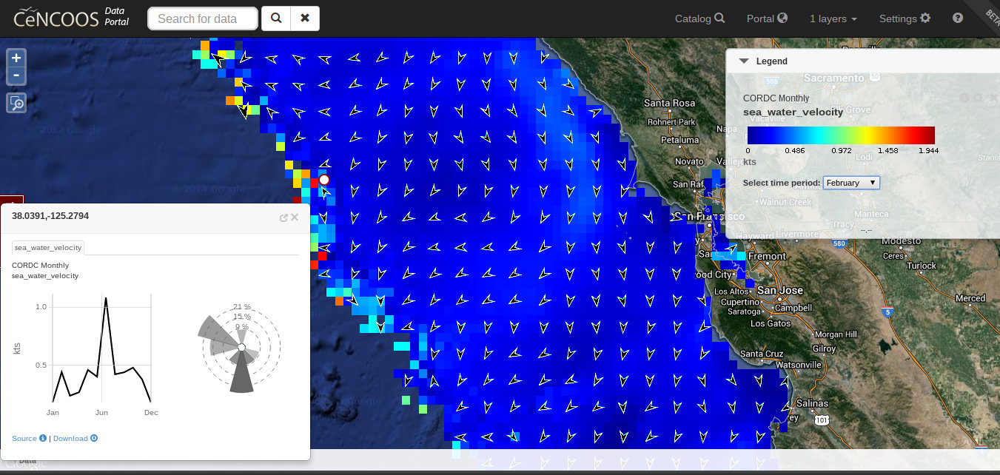
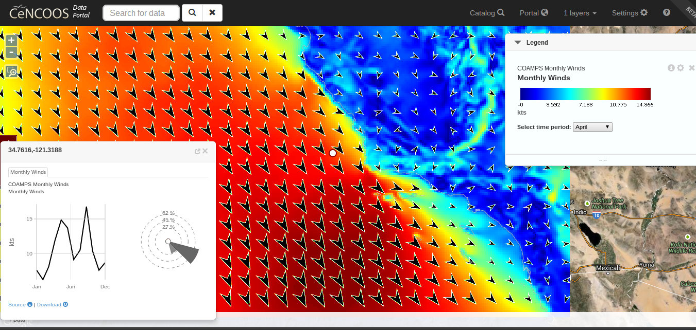
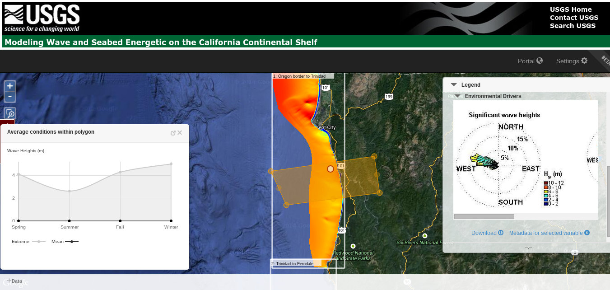
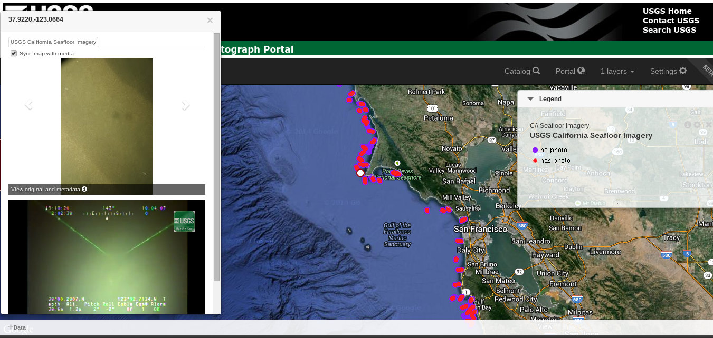
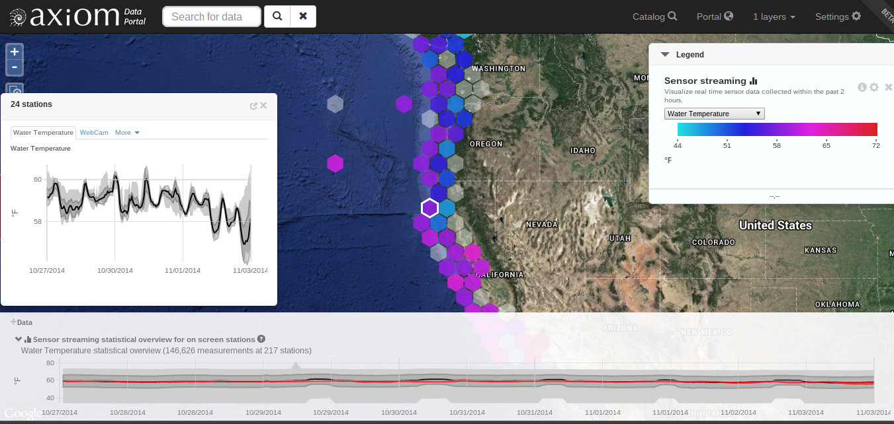
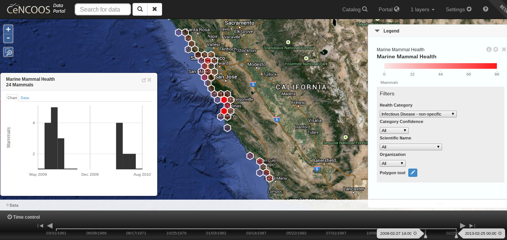
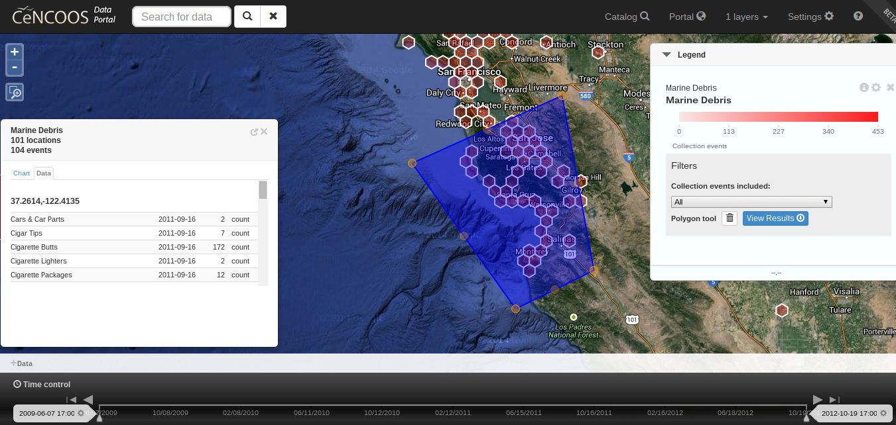

West Coast Activities Update 2014
Press space bar to continue...
Axiom Overview
Data management, processing, visualization, and access
Data infrastructure for CeNCOOS and AOOS
Projects with USGS, IOOS, various research initiatives
Distributed processing and storage techniques
CORDC Monthly Currents (CeNCOOS)
Monthly current averages

COAMPS Monthly Winds (CeNCOOS)
Monthly wind averages
USGS California Wave and Seabed Energetics
Advanced ocean data visualization and access (beta)
USGS California Seafloor Video/Photo Portal
Seafloor media exploration with map sync
West Coast Sensor Map
With Hex Binning and Summary Stats (exploratory)
West Coast Marine Mammal Health Map Hex Bin
Spatial summary for biological time series (beta)
West Coast Marine Debris
Spatial summary for marine debris time series (exploratory)
